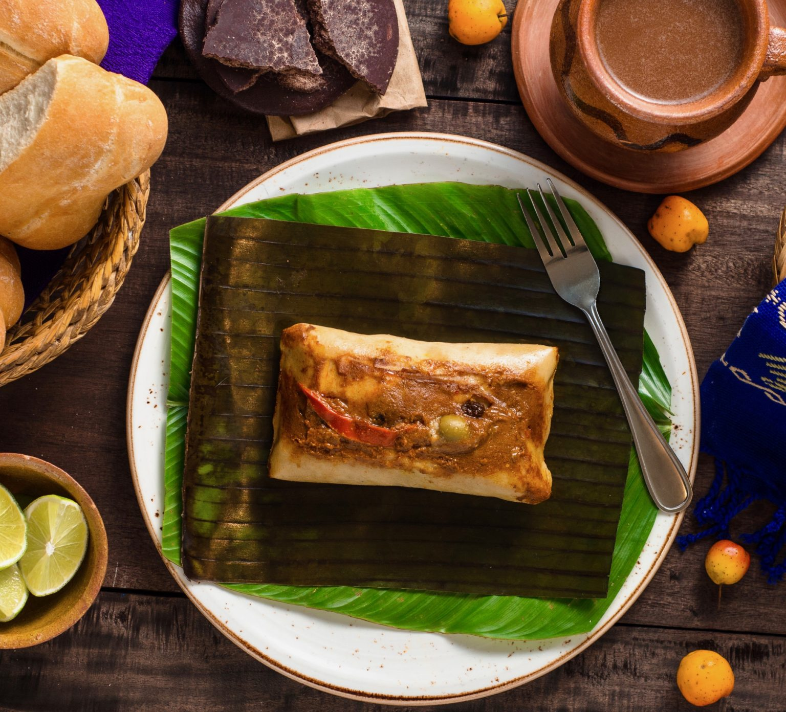

Tamal Colorado

Tamales colorados are very traditional in Guatemala. The dish is prepared
for all kinds of occasions, but especially for celebrations. Unlike the
traditional Mexican tamal, this typical Guatemalan dish is wrapped in
fresh banana leaves.
Ingredients
Recado (Sauce)
- 1 pound and a half of ripe plum tomato.
- 2 chili peppers.
- 3 guaques chiles (guajillo chili).
- 2 ounces of sesame seeds.
- 2 ounces of pumpkin seed
- 1 small cinnamon stick.
- 1 ounce of lard.
- Annatto.
- Salt.
Dough (Masa)
- 1 pound and a half of corn dough.
- 8 ounces of lard.
- 1 suitcase of banana leaves.
- 2 suitcases of maxan leaves.
- 3 chili peppers to be roasted.
- 4 ounces of olives.
- 4 ounces of capers.
- 2 pounds of pork meat.
- 1/2 pound of bacon in small pieces -optional-.
Steps
-
First, start by cutting the maxan leaves into squares, wash and dry in
the sun.
-
Cut the plantain leaves into squares of approximately 25 centimeters and
boil them in water for 10 minutes.
- Soak the cibaque strips in water to soften them.
Recado(sauce)
- Then, proceed to chop the tomatoes.
- Wash and remove the seeds from the guajillo chili.
-
Add a little butter to the frying pan and cook the above ingredients.
-
Then, grind the mixture and season with a little salt, sesame seeds,
pumpkin seed, cinnamon, annatto and salt.
-
If you want to add bacon, cut it into small pieces and add it to the
mixture.
- Cut the pork into regular sized squares and add to the recado.
- In a frying pan melt some lard and fry the meat with the recado.
-
Separately roast the chili peppers, peel, split, devein and remove the
seeds.
- Cut the chiles into strips and set aside.
Masa (Dough)
- Melt and mix the corn masa in half a liter of water and blend.
-
Bring 4 cups of water to a boil and add the masa, stirring constantly.
- When the dough is thick, beat and add plenty of salt.
- Remember that the salt tends to lose its flavor during cooking.
-
If the dough is too thick, hot water can be added little by little.
- When the dough is ready, remove from the heat and add the butter.
-
Beat until the butter is well blended and the dough is a little shiny.
Tamales
- Place a banana leaf diagonally on top of a maxan leaf.
-
In the center add a portion of masa and abundant recado, as well as the
meat.
- Also add olives, capers, raisins and chili bell pepper strips.
- Fold the leaves to form a package.
- Tie with cibaque strips.
-
In the bottom of a pot, put the leftover leaves, 4 cups of water and
bring to a boil.
- When it starts to boil, place the tamales.
- Cover the pot with more leaves and a blanket.
- Finally, boil for approximately 1 hour and a half.